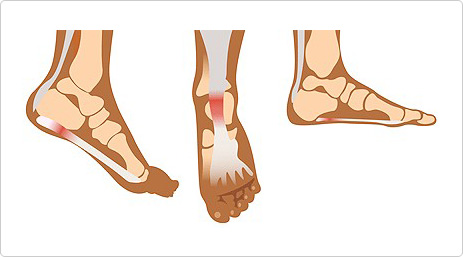

足底筋膜炎
足底筋膜分布在整个脚掌上，当跳跃或行走的时候，它可以缓解对脚掌的冲击，但如果使用过度，足底筋膜就会发炎，导致脚掌浮肿，脚掌与骨的接触部位也会很疼痛。

治疗方法
T若在初期发现足底筋膜炎时，只需辅助治疗就能治疗95% 。若初期症状较轻时，需要休息1～2个星期，通过服用消炎止痛药并进行足底筋膜伸展运动即可完全治疗。如果通过治疗也没有好转时，可通过局部注射甾族化合物类固醇来治疗，难治性足底筋膜炎可通过手术治疗。